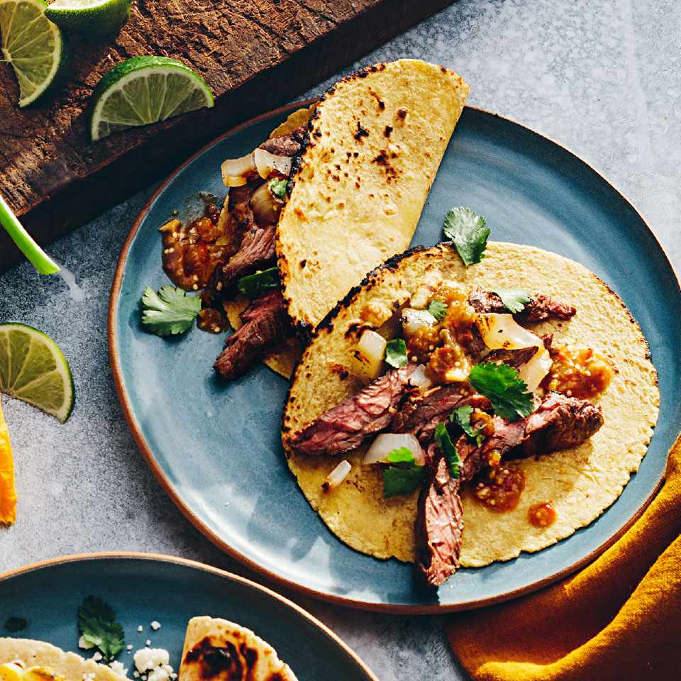

Steak Tacos

A taco is a traditional Mexican food consisting of a small hand-sized corn- or wheat-based tortilla topped with a filling. The tortilla is then folded around the filling and eaten by hand
Ingredients
- 8 ounces fresh tomatillos (about 5 medium), husked and rinsed
- 3 large cloves garlic, unpeeled
- 1 (7 ounce) can chipotles in adobo, divided
- 0.75 teaspoon salt, divided
- pound skirt steak, trimmed
Steps to Make Steak Tacos
- Have chapati dough ready
- Bake it for 5 min
- When ready, add the aside flied steak
- Ready to Eat!